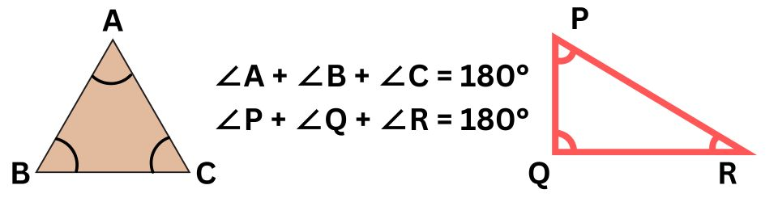
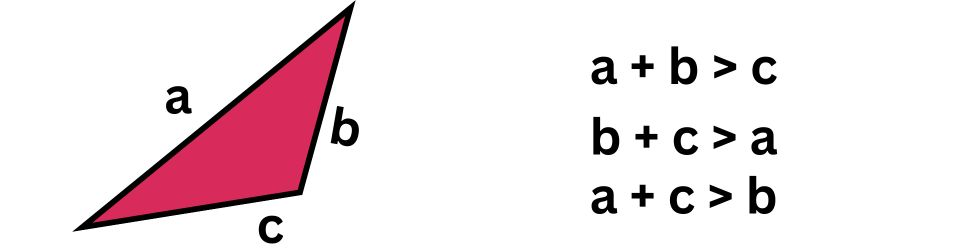
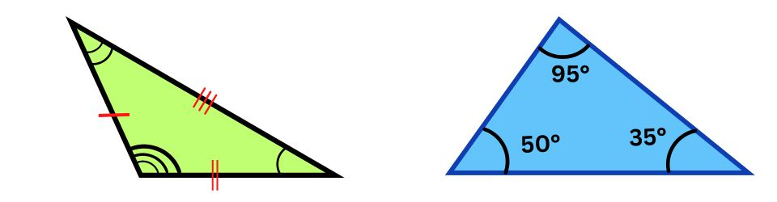
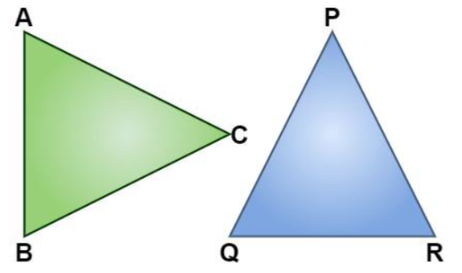
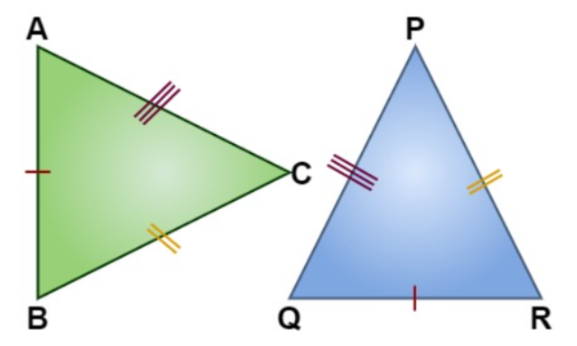
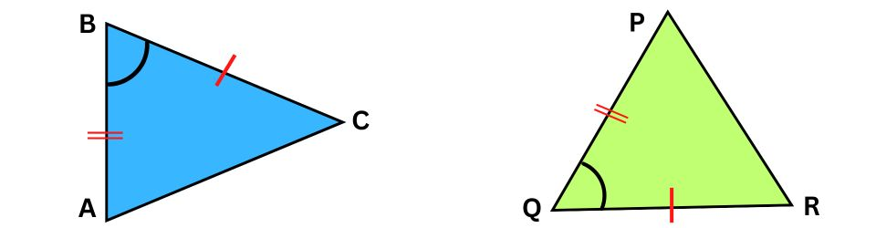
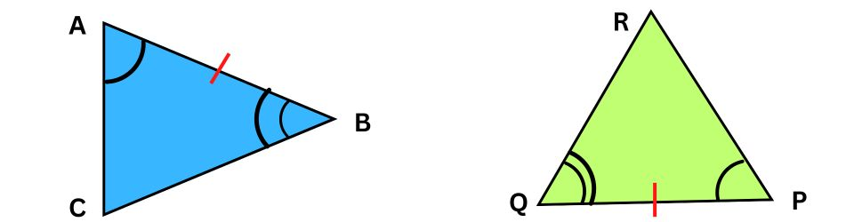
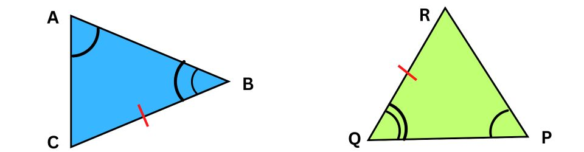

The properties of a triangle help us to identify a triangle from a given set of figures easily. A triangle is a polygon that has three angles, three sides, and three vertices. Triangles can be classified into different types of triangles based on the length of the sides and the measure of the angles. Let us learn more about the properties of triangles along with the theorems based on them.
Different Types of Triangles
Triangles can be classified into two broad categories based on their angles and sides. Observe the following figure which shows the types of triangles that are distinguished on the basis of their sides and angles.
Triangle and its Properties
The properties of a triangle help us to identify relationships between different sides and angles of a triangle. Some of the important properties of a triangle are listed below.
Angle Sum Property
As per the angle sum property, the sum of the three interior angles of a triangle is always 180°.

In the given triangle,∠A + ∠B + ∠C = 180° and ∠P + ∠Q + ∠R = 180°
Triangle Inequality Property
As per the triangle inequality property the sum of the length of the two sides of a triangle is greater than the third side.  Observe the figure given above which shows △ABC which represents the Triangle inequality property. If a = 4 units, b = 6 units, and c = 3 units, let us verify the triangle inequality property as follows:
- a + b > c ( 4 + 6 > 3)
- c + a > b (3 + 4 > 6)
- c + b > a (3 + 6 > 4)
Side Opposite the Greater Angle is the Longest Side
In order to understand this property which says that the side opposite the greater angle is the longest side, observe the triangle given below. In this triangle, ∠B is the greatest angle. Thus, the side AC is the longest side. 
Exterior Angle Property
As per the exterior angle property, the exterior angle of a triangle is always equal to the sum of the interior opposite angles. In the given triangle, ∠e = ∠a + ∠b
It should be noted that 3 exterior angles can be extended in a triangle and all these exterior angles add up to 360°.
Congruence Properties of Triangles:
What Are Congruent Triangles?
Congruent triangles are triangles that are perfect copies of one another. Various congruence rules are used to prove the congruence in two triangles.
Congruent triangles if arranged in proper orientation are mirror images of each other. The corresponding angle and dimensions of congruent figures are the same.
The symbol used to show congruence between two objects is “≅”. To show congruency between them we write Δ ABC ≅ Δ PQR.

CPCT Full Form:
The full form of CPCT is Corresponding Parts of Congruent Triangles. This is a fundamental rule used to establish equality of various parts of triangles based on their congruence.
It states that if two triangles are congruent, then each of their corresponding parts (angles and sides) are equal.
Congruence of Triangles Rules:
The different criteria used to prove congruence between two triangles are:
SSS Criteria: Side-Side-Side: If all three sides of a triangle are equal to the corresponding three sides of another triangle, then it satisfies the condition of SSS.

In the above-given figure, we can see that,
AB = QR
BC = RP
CA = PQ .
Hence, Δ ABC ≅ Δ QRP
SAS Criteria: Side-Angle-Side:In comparison among two triangles, if two sides and the angle included between two sides are equal. Then it satisfies the condition of SAS.

In the above-given figure, we can see that,
CB = RQ,
BA = QP, and
∠B = ∠Q.
Hence, Δ CBA ≅ Δ RQP.
ASA Criteria: Angle-Side-Angle: If we have two triangles, where any two angles and sides included between the two angles of one triangle are equal to the angles and sides of the corresponding triangle. Then the two triangles will satisfy the ASA congruency.

In the above-given figure, we can see that,
AB = PQ,
∠A = ∠P, and
∠B = ∠Q.
Hence, ΔACB ≅ ΔPQR.
AAS Criteria: Angle-Angle-Side: If any two angles of a triangle and non-included side are equal to the two angles and side of the corresponding triangle, then it will satisfy the AAS congruency.

From the given figure, we can say that,
BC = QR,
∠A = ∠P, and
∠B = ∠Q
Hence, ΔACB ≅ ΔDFE